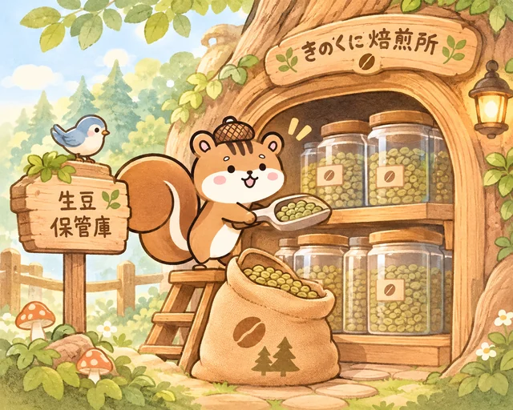
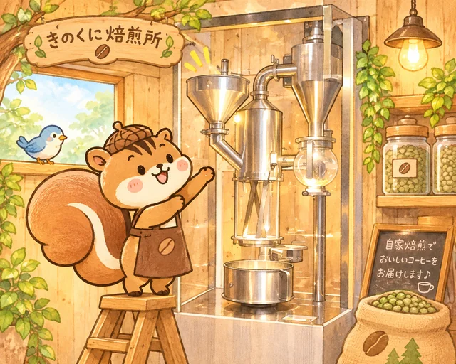
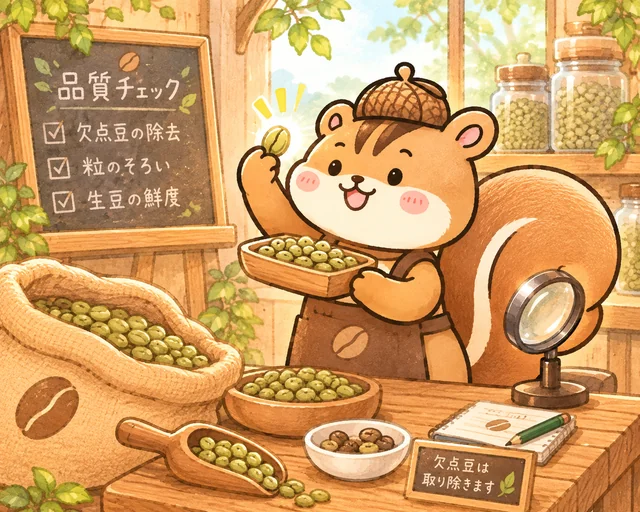
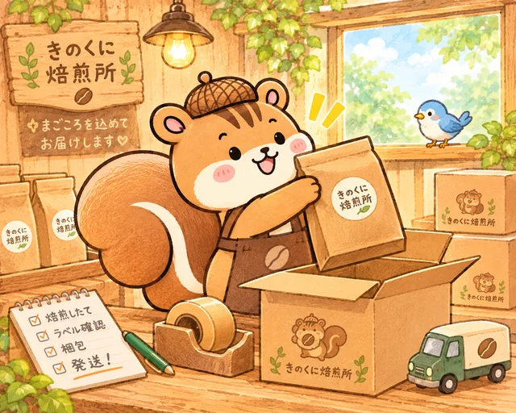

Our Craft
焙煎へのこだわり
おいしい一杯のために、ひとつひとつ丁寧に。
おいしいコーヒーが届くまでの、
4つのこだわりを紹介するね！

-

こだわり 1
焙煎前から、大切に。
当店では生豆を定温保管庫にて保管し、一年を通して温度と湿度を管理しています。
コーヒー豆の品質を大切に守り、おいしい一杯につなげています。
「生豆（なままめ）」は、焙煎する前のコーヒー豆のことだよ。
-

こだわり 2
専用焙煎機「αNOVO」で丁寧に焙煎。
専用焙煎機「αNOVO」を使用し、少量ずつ丁寧に焙煎しています。
生産者から届いたスペシャルティコーヒーの個性を大切にし、それぞれの豆に合った焙煎を目指しています。
-

こだわり 3
ひと粒まで丁寧に。
焙煎の前後で豆の状態を確認し、気になる豆や品質に影響する豆を取り除いています。
お客様に安心して楽しんでいただけるよう、一粒一粒を大切にしています。
-

こだわり 4
焙煎したその日のうちに発送。
当店は受注焙煎です。
ご注文を受けてからコーヒー豆を焙煎し、焙煎したその日のうちに発送します。
できるだけ新鮮なコーヒーをお届けします。
届いたら、袋を開けたときの香りもぜひ楽しんでね。